Každého chovného jedince vybíráme ve spolupráci s mezinárodními plemennými knihami a zoologickými institucemi.
Součástí péče jsou pravidelné veterinární prohlídky, testování DNA pro ověření původu a preventivní screeningy zaměřené na pohybový aparát a celkovou kondici.
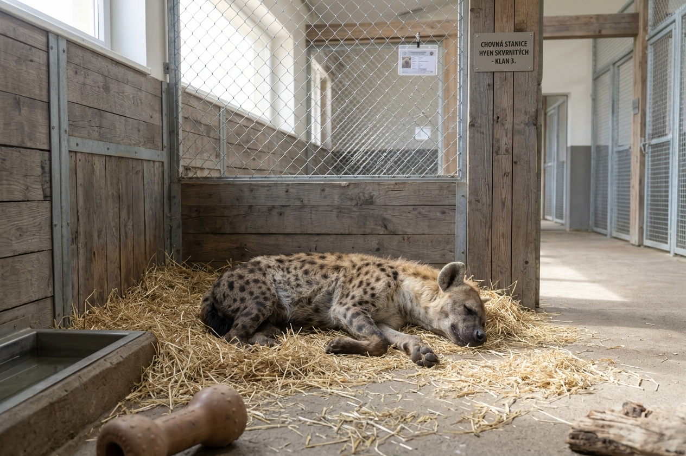
Luna
• Pohlaví: Samice
• Datum narození: 14. 3. 2018
• Povaha: Luna je klidná, nesmírně inteligentní a dominantní samice s přirozenou autoritou. K
ošetřovatelům je velmi vnímavá, zvídavá a projevuje silné mateřské instinkty.
• Zdravotní testy:
Genetický profil (DNA): Jasný / Negativní (05/2023)
RTG dysplazie kloubů: HD A/A, ED 0/0 – plně zdravá (11/2022)
Komplexní krevní screening: V normě (09/2025)
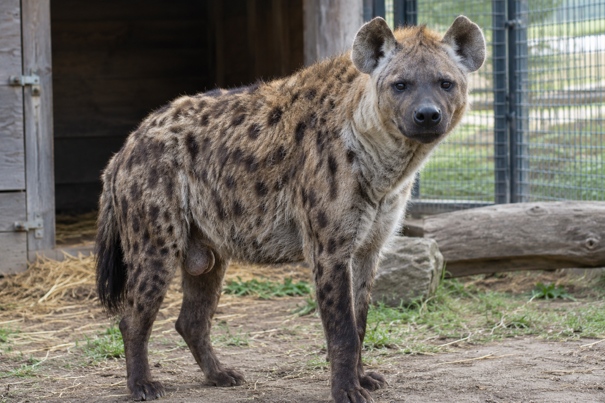
Maroš
• Pohlaví: Samec
• Datum narození: 28. 8. 2020
• Povaha: Kibo je energický, hravý a velmi přátelský samec. Miluje interaktivní hračky, je
nekonfliktní
a v klanu zastává stabilizační a submisivní roli.
• Zdravotní testy:
Genetický profil (DNA): Jasný / Negativní (02/2022)
RTG dysplazie kloubů: HD A/A – plně zdravý (10/2022)
Vyšetření srdce (Kardio): Bez nálezu (04/2024)
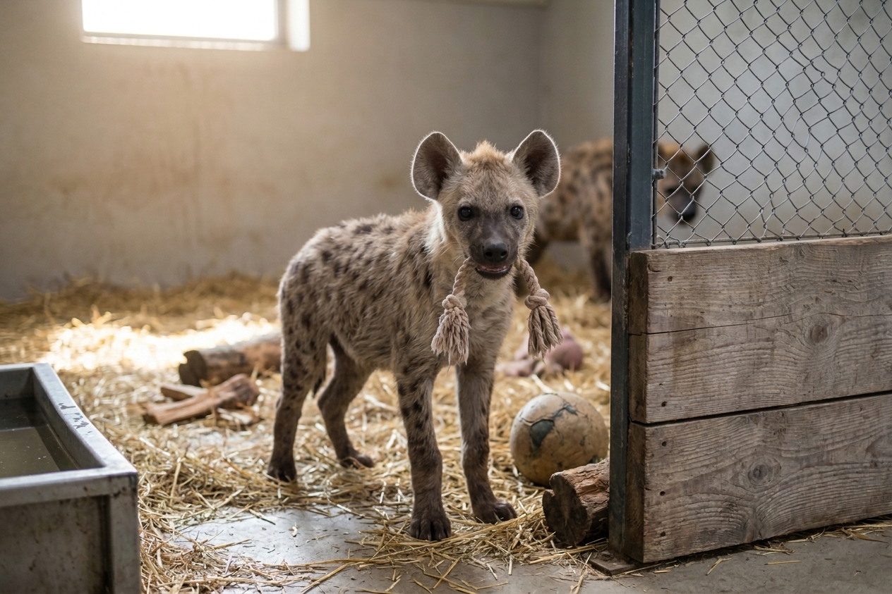
Dethamil
• Pohlaví: Samec
• Datum narození: 12. 12. 2025
• Povaha: Dethamil podědil po své matce Luně vysokou inteligenci. V klanu projevuje zdravé sebevědomí,
velmi rychle se učí novým dovednostem v rámci enrichmentu a miluje přetahování o lanové hračky.
• Zdravotní testy:
Genetický profil (DNA): Jasný / Negativní po rodičích (01/2026)
RTG dysplazie kloubů: Plánováno po dosažení fyzické dospělosti
Základní klinické vyšetření: Plně zdráv, bez vývojových vad (08/2026)
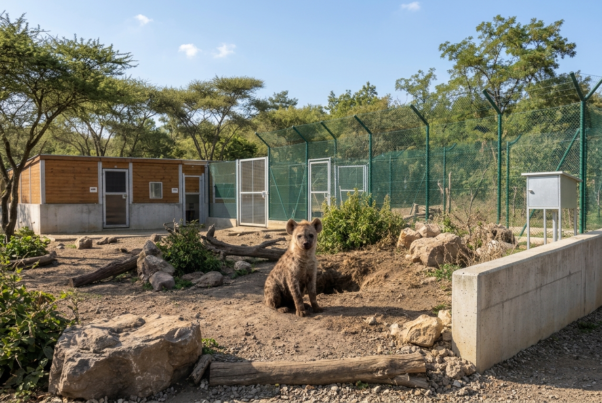
Banzai
• Pohlaví: Samec
• Datum narození: 14. 04. 2026
• Povaha: Zvědavé, velmi ostražité a aktivní mládě. Je zvídavý vůči ošetřovatelům, projevuje typickou
sociální inteligenci a rád prozkoumává nový obohacovací materiál (enrichment) ve výběhu.
• Zdravotní testy:
Genetický profil (DNA/Paternity): Potvrzen (06/2026)
Rentgenové vyšetření kloubů (HD/ED): Bez nálezu (09/2026)
Kompletní krevní obraz & biochemie: V normě (10/2026)
Vakcinace & odčervení: Kompletní dle schématu šelem (09/2026)
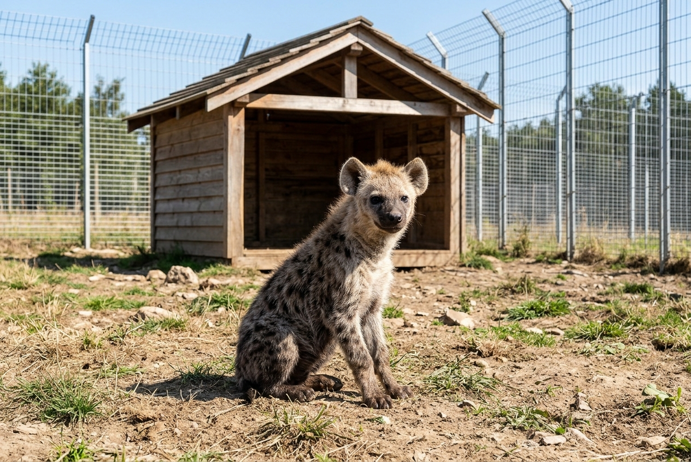
Kika
• Pohlaví: Samice
•Datum narození: 28. 05. 2024
•Povaha: Dominantnější a odvážná mladá samice s výrazným vůdčím potenciálem. Vzhledem ke komplexní
sociální struktuře hyeních klanů projevuje již od útlého věku sebevědomí, zvídavost a vynikající
schopnost komunikace v tlupě.
•Zdravotní testy:
Genetický profil (DNA/Paternity): Potvrzen (07/2026)
Rentgenové vyšetření kloubů (HD/ED): Bez nálezu (09/2026)
Kompletní krevní obraz & biochemie: V normě (10/2026)
Vakcinace & odčervení: Kompletní dle schématu šelem (09/2026)
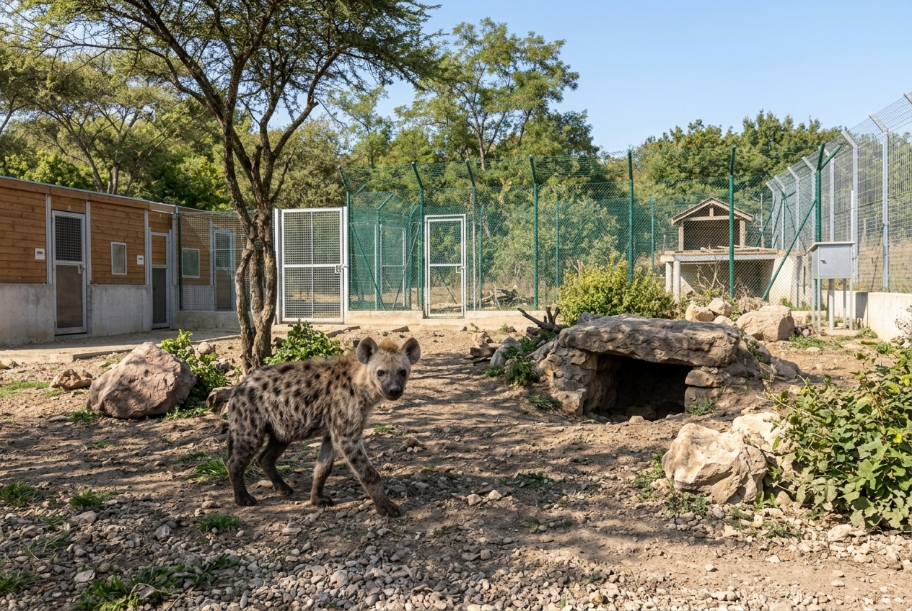
Zuri
• Pohlaví: Samice
• Datum narození: 12. 07. 2024
• Povaha: Velmi vnímavá, klidnější, ale velmi chytrá mladá samice. Skvěle reaguje na pozitivní
stimulaci
při enrichmentu a projevuje silné sociální pouto s ostatními mláďaty v klanu.
•Zdravotní testy:
Genetický profil (DNA/Paternity): Potvrzen (07/2026)
Rentgenové vyšetření kloubů (HD/ED): Bez nálezu (10/2026)
Kompletní krevní obraz & biochemie: V normě (10/2026)
Vakcinace & odčervení: Kompletní dle schématu šelem (10/2026)
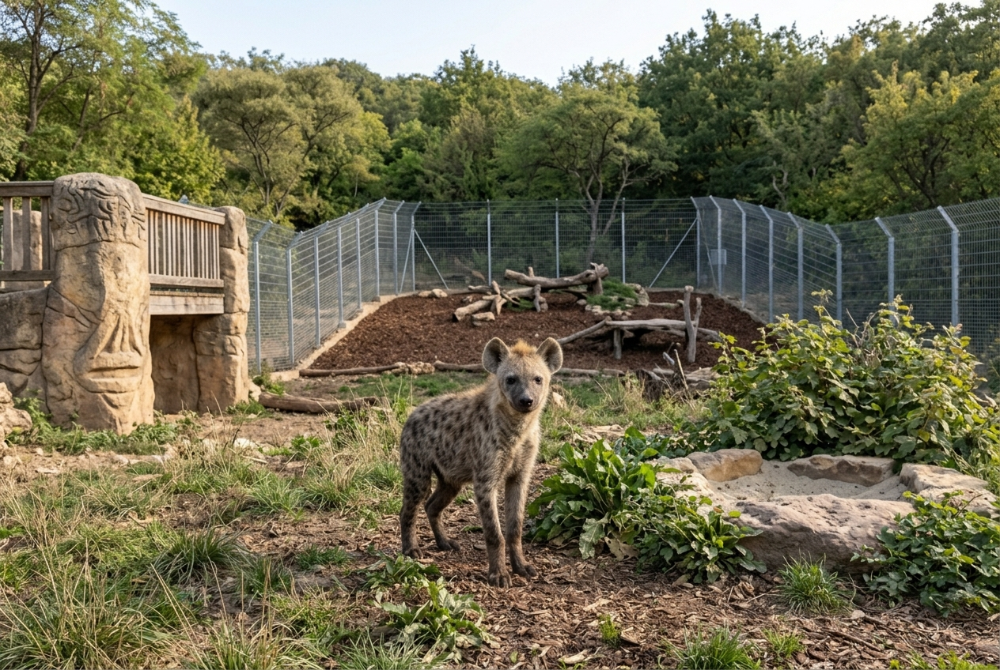
Kuvi
• Pohlaví: Samec
• Datum narození: 10. 03. 2023
• Povaha: Klidný, podřízený a velmi vyrovnaný chovný samec. Je zvyklý na kontaktní trénink s
ošetřovateli a vyniká trpělivostí při kontaktu s mláďaty.
• Zdravotní testy: Genetický profil (DNA/Paternity): Potvrzen & Registrován (05/2021)
Kompletní krevní obraz & biochemie: Vynikající výsledky (09/2026)
Vakcinace & odčervení: Kompletní dle schématu šelem (09/2026)
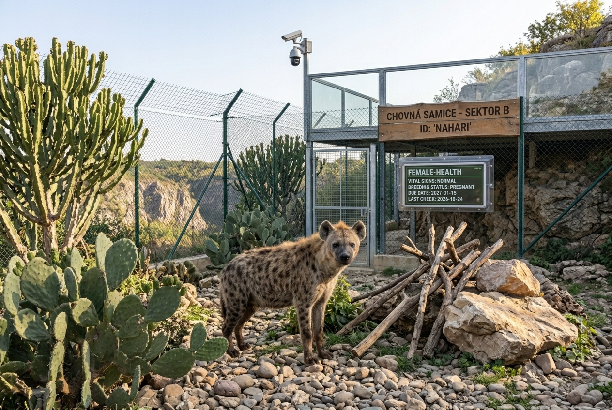
Domi
• Pohlaví: Samice • Datum narození: 14. 5. 2023
• Povaha: Sebevědomá, dominantní a velmi bystrá samice s přirozeným vůdcovským chováním. Je klidná při
veterinárních úkonech a má skvělý mateřský potenciál. Naslouchá všem povelům a je velmi přátelská.
• Zdravotní testy:
Genetický test na bradylogii a dědičné vady: Negativní (1/2026)
Screening srdečních vad a USG břicha: V pořádku (10/2026)
Kompletní hematologické a parazitologické vyšetření: Negativní (9/2026)
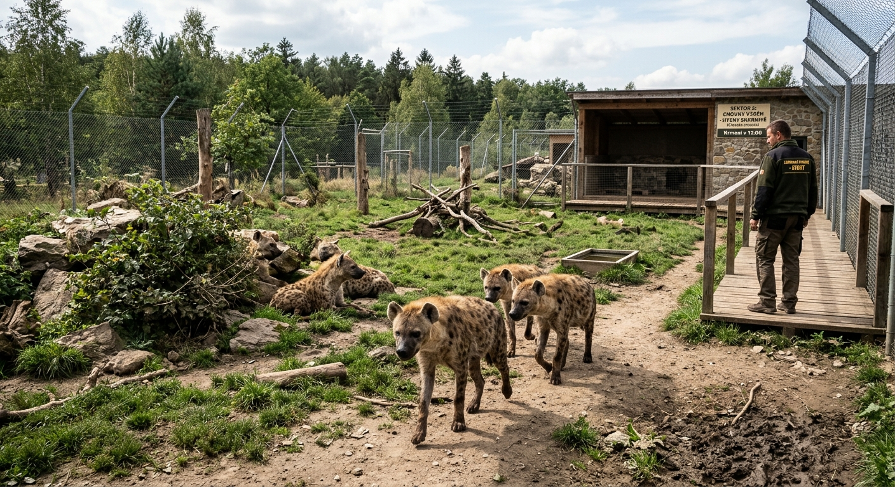
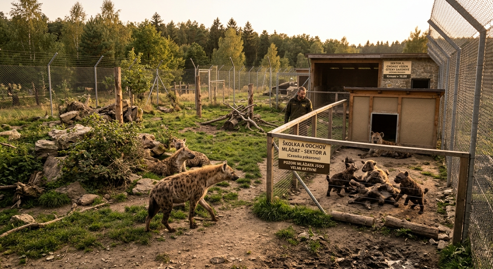
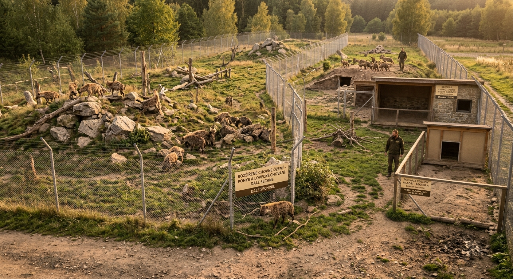
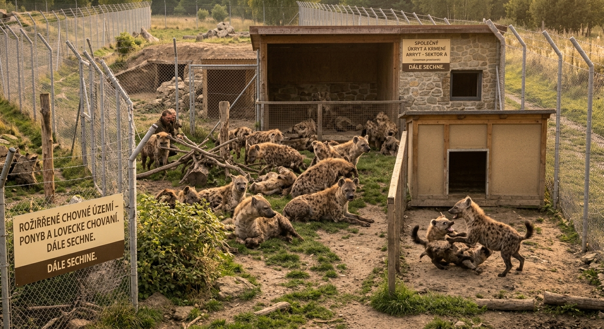